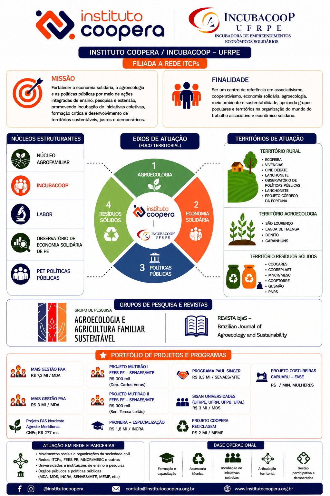

Leitura rápida do momento
Prioridade formativa
Concluir a versão do relatório sem perder a dimensão crítica: Agroecologia, Educação Popular, Economia Solidária, ATER Agroecológica, Processos Grupais e Memória Biocultural.
Prioridade extensionista
Registrar as experiências da Ecofeira, RECAT, Instituto Coopera e Programa Paul Singer como memória de campo e material de reflexão.
Prioridade de sistematização
Qualificar diário de campo, bibliografia, sínteses de GTs e categorias analíticas para contribuir com a sistematização do Programa Paul Singer.
Tarefas, prazos e prioridades
| Área | Tarefa | Responsável | Prazo | Prioridade | Situação | Pendências/observações |
|---|---|---|---|---|---|---|
| Relatório de estágio | Enviar versão para orientadora | Augusto | 11/06/2026 | Crítica | Em andamento | Fechar versão revisável. |
| Relatório de estágio | Finalizar relatório completo | Augusto | 26/06/2026 | Crítica | Pendente | Entrega final. |
| Mestra Fernanda | Enviar agenda diária às 07:00 | Augusto | Diário | Crítica | Recorrente | Atualizar logo cedo. |
| Programa Paul Singer | Organizar Drive e descrição do grupo de WhatsApp | Malu / Augusto / coletivo | 15/06/2026 | Alta | Pendente | Reunir bibliografia, revistas, vídeos, relatórios dos módulos e encontros nacionais. |
| Programa Paul Singer | Corrigir e atualizar diário de campo no Drive | Alzira, Horasa, Maurício, Augusto, Luciano e Malu | 08/06/2026 | Crítica | Pendente | Base para viabilizar a sistematização. |
| Programa Paul Singer | Reunir sínteses dos GTs no Drive | Malu e Augusto | 06/06/2026 | Alta | Verificar | GTs observados: 6, 13 e 10. |
| Programa Paul Singer | Ler sínteses dos GTs e definir uso | Malu, Augusto, Alzira e Horasa | 20/06/2026 | Alta | Pendente | Relacionar com diário de campo e entrevistas. |
| Programa Paul Singer | Roteiro de entrevista da coordenação nacional | Maurício e Luciano | 12/06/2026 | Alta | Pendente | Entrevistas até 25/06: Mundinha, Eliane Martins, Cláudio, Vanderlúcia, Sérgio Godóy. |
| Instituto Coopera | Criar calendário anual e mensal da Incubadora | Secretaria | 14/06/2026 | Alta | Pendente | Memória anual e atividades a executar. |
| Ecofeira / RECAT | Registrar atividades de terça-feira e acompanhamentos | Augusto | Semanal | Alta | Recorrente | Transformar registros em memória de campo. |
| Ecofeira | Oficina formativa: Ecofeira como empreendimento | Danielle e Augusto | A definir | Alta | Realizado | Avanços: Barracas I. |
| PET / Ecofeira | Reunião com PET para alinhar ações | Danielle e Augusto | 11/06/2026 | Crítica | Em andamento | Produto: documento escrito. |
| Ecofeira | Oficina formativa: intercâmbios de experiências | Danielle e Augusto | 09/06/2026 | Crítica | Em andamento | Eixos: Ecofeira como empreendimento; Autogestão; Funcionamento e responsabilidades; Releitura do Bext. |
Critério de prioridade
Crítica
Prazo em até 48 horas, tarefa obrigatória, entrega institucional, agenda diária da Fernanda ou algo que bloqueia outras atividades.
Alta
Prazo em até 7 dias, compromisso com outras pessoas, atividade de campo, reunião, oficina ou parte importante do relatório.
Média/Baixa
Média: importante para formação, mas com prazo mais flexível. Baixa: organização, leitura complementar ou melhoria que pode esperar.
Agenda sugerida
Rotina diária
Segunda, terça, quarta e sexta
Agenda do dia e semana carregada
Destaque do dia
Regra de orientação: primeiro cumprir o que tem prazo, o que envolve outras pessoas e a agenda diária da Fernanda. Depois avançar leitura, fichamento e memória de campo.
Hoje: clique aqui e escreva o foco principal do dia.
Perguntas de fechamento do dia
O que avancei? O que aprendi? O que ficou pendente? Que conceito novo apareceu? Qual registro de campo preciso fazer?
| Dia | Horário | Atividade | Frente | Prioridade | Observações |
|---|---|---|---|---|---|
| Todos os dias | 05:00-06:50 | Estudo, leitura fichada ou escrita orientada | Formação acadêmica | Alta | Priorizar relatório até 11/06. |
| Todos os dias | 07:00 | Enviar agenda diária da Mestra Fernanda | Agenda Fernanda | Crítica | Imprescindível. |
| Segunda | 08:00-12:00 / 14:00-17:00 | PET Políticas Públicas | PET | Alta | Rotina fixa, exceto quinta. |
| Terça | A combinar | Ecofeira da Rural; comunicação da oficina em 09/06 | Ecofeira | Crítica | Registrar campo, falas e encaminhamentos. |
| Quarta | 08:00-12:00 / 14:00-17:00 | PET Políticas Públicas; reunião PET em 11/06 se aplicável ao planejamento | PET / Ecofeira | Crítica | Alinhar ações e documento escrito. |
| Quinta | Manhã | Revisão e envio da versão do relatório para orientadora | Relatório de estágio | Crítica | Prazo 11/06. |
| Sexta | 08:00-12:00 / 14:00-17:00 | PET Políticas Públicas; ajustes do relatório e Coopera | PET / Coopera | Alta | Acompanhar retorno da orientadora. |
| Todos os dias | 20:00-00:00 | Produção, sistematização do dia e planejamento | Formação / Memória | Crítica | Registrar aprendizados e pendências. |
Agenda diária da Mestra Fernanda
Preencha ou edite os itens abaixo. Depois clique em gerar relatório para criar uma mensagem pronta para envio.
| Data | Horário | Compromisso/atividade | Local | Status | Observações |
|---|---|---|---|---|---|
| Hoje | 07:00 | Enviar agenda do dia para Mestra Fernanda | WhatsApp / canal combinado | Crítica | Rotina imprescindível logo cedo. |
| Hoje | A preencher | A preencher com compromissos dela | A preencher | Média | Ajustar diariamente. |
Memória de Campo
| Data | Local | Participantes | Descrição | Falas importantes | Reflexões pessoais | Temas relacionados |
|---|---|---|---|---|---|---|
| 03/06/2026 | Sala de reuniões do PPGADT | Horasa, Luciano, Alzira, Malu e Maurício | Reunião do coletivo Programa Paul Singer sobre sistematização, diário de campo, bibliografia e cronograma do livro. | A sistematização depende de diário de campo qualificado e registros da equipe. | O diário de campo é ferramenta de pesquisa, memória e formação política. | Economia Solidária; Sistematização; Educação Popular; Política Pública |
| Terças-feiras | Ecofeira da Rural | Feirantes, equipe, público, projetos | Acompanhamento das atividades e uso do espaço para divulgação, escuta e registro. | Inserir falas observadas após cada feira. | Relacionar prática de extensão com economia solidária e agroecologia. | Ecofeira; Agroecologia; Comercialização; Educação Popular |
Sistematização de Experiências
| Experiência | O que aconteceu | Como aconteceu | Por que aconteceu | O que aprendemos | Lições para outras experiências | Categorias analíticas |
|---|---|---|---|---|---|---|
| Sistematização PPS 2023-maio/2026 | Processo de análise das formações com agentes territoriais, coordenações estaduais e equipe nacional. | Leitura de documentos, diário de campo, sínteses de GTs, entrevistas e oficinas de estudo. | Produzir reflexão crítica e inspirações para nova versão do Programa Paul Singer. | A memória histórica das políticas públicas, o local/territorial e a autogestão precisam ganhar mais visibilidade. | Registrar desde o início, organizar categorias e socializar textos em processo. | Economia popular; Autogestão; Agentes locais; Território; Educação Popular |
Cronograma da sistematização do Programa Paul Singer
| Marco | Período/Prazo | Responsáveis | Observações |
|---|---|---|---|
| Bibliografia do Programa reunida | Até 15/06/2026 | Malu e coletivo | Incluir relatórios, revistas, vídeos e documentos do PPS. |
| Leitura de referenciais bibliográficos | 02 a 30/06/2026 | Coletivo | Oscar Jara e materiais de economia solidária, autogestão e memória histórica. |
| Entrevistas com coordenação nacional | 04 a 25/06/2026 | Maurício e Luciano | Roteiro até 12/06. |
| Revisão e classificação do diário de campo | 08 a 17/06/2026 | Alzira e Horasa | Classificar por categorias. |
| Oficina sobre diário, GTs e entrevistas | 13/07/2026, 08h às 17h | Coletivo | Coordenação de Alzira e Horasa. |
| Leitura crítica da SENAES | Setembro/2026 | Coletivo | Finalização para leitura crítica. |
| Cópia para leitura do livro | Outubro/2026 | Coletivo | Produto livro/e-book sobre a sistematização. |
Formação Acadêmica e Temas de Estudo
| Tema | Conceitos estudados | Conceitos em construção | Leituras realizadas | Leituras pendentes | Autores | Reflexões |
|---|---|---|---|---|---|---|
| Economia Solidária | Autogestão; economia popular; cooperação | Política pública de agentes locais; gestão territorial | Documentos do Programa Paul Singer | A construção do conhecimento em economia solidária; CFES NE | Paul Singer; Medeiros et al.; equipe PPS | Tema central da formação e da atuação extensionista. |
| Educação Popular | Diálogo; práxis; formação crítica | Metodologia político-pedagógica do PPS | Registros das formações | Textos de apoio para relatório | Paulo Freire; Oscar Jara | Base para atuar como educador popular. |
| ATER Agroecológica | Extensão rural; acompanhamento; território | ATER vinculada à economia solidária | Notas de estágio | Política Nacional de ATER e experiências agroecológicas | A definir | Conectar relatório com prática de campo. |
| Memória Biocultural | Memória; território; ancestralidade | Relação com processos grupais | Notas iniciais | Bibliografia específica | A definir | Ajuda a pensar agroecologia para além da produção. |
| Sistematização de Experiências | Experiência vivida; interpretação crítica; lições aprendidas | Categorias analíticas do PPS | Registro da reunião de 03/06 | Oscar Jara, Para sistematizar experiências | Oscar Jara | Método para transformar prática em conhecimento. |
Banco de Conceitos
| Conceito | Definição acadêmica | Explicação simples | Exemplo observado | Autor(es) | Onde encontrei |
|---|---|---|---|---|---|
| Sistematização de experiências | Processo de interpretação crítica de uma experiência vivida para compreender sua lógica, aprendizagens e sentidos. | Olhar para o que aconteceu, entender por que aconteceu e tirar aprendizados úteis. | Sistematização do Programa Paul Singer entre 2023 e maio de 2026. | Oscar Jara | Reunião PPS 03/06/2026; bibliografia indicada. |
| Autogestão | Forma coletiva e democrática de gestão do trabalho, da produção e das decisões. | As pessoas envolvidas decidem juntas os rumos do empreendimento ou projeto. | Cooperativas de resíduos sólidos e experiências de economia solidária. | Paul Singer; documentos PPS | Programa Paul Singer; RECAT; Ecofeira. |
Banco Bibliográfico
| Autor | Ano | Título | Tema | Tipo | Usado em | Observações |
|---|---|---|---|---|---|---|
| Oscar Jara | 2006 | Para sistematizar experiências | Sistematização | Livro | PPS; relatório; disciplina | Ver se está no Drive ou na internet. |
| Medeiros et al. | A conferir | A construção do conhecimento em economia solidária | Economia Solidária | Texto/livro | Programa Paul Singer | Capítulos 1 e 2 citados na reunião. |
| Programa Paul Singer | 2023-2026 | Documentos político-pedagógicos e relatórios dos módulos | Formação de agentes | Documento institucional | Livro de sistematização | Reunir no Drive até 15/06. |
Produção Acadêmica
| Produção | Etapas | % concluído | Referências utilizadas | Pendências | Prazo |
|---|---|---|---|---|---|
| Relatório de Estágio | Sumário; escrita dos eixos; revisão; referências; anexos | 25% | Economia Solidária; Educação Popular; ATER; Agroecologia; Memória Biocultural | Enviar versão à orientadora | 11/06 e 26/06/2026 |
| Livro de sistematização do PPS | Apresentação; introdução; 7 capítulos; considerações e inspirações | Em estruturação | Documentos PPS; Oscar Jara; economia solidária | Título, quantidade impressa, tamanho dos capítulos, projeto gráfico | Setembro/Outubro 2026 |
| Capítulo 5 - Sujeitos da ação | Análise qualitativa do perfil dos agentes territoriais | Inicial | Dados de inscrição; documentos PPS | Definir recorte e escrita inicial | A definir |
Rede de Relações e Instituições
| Instituição | Projeto | Pessoas-chave | Contatos | Relação com minhas atividades | Próximos encaminhamentos |
|---|---|---|---|---|---|
| UFRPE | Agroecologia / PET / Extensão | Orientadora; equipe PET; docentes | A preencher | Formação acadêmica e atuação extensionista | Alinhar relatório de estágio e agenda. |
| Instituto Coopera / INCUBACOOP | Incubação, economia solidária, agroecologia e políticas públicas | Horasa, Luciano, Maurício, Ana Flávia, Malu, Dani | contato@institutocoopera.org.br | Secretaria, memória institucional e projetos | Organizar Drive, calendário, relatório anual e comunicação. |
| Programa Paul Singer | Formação de agentes de economia solidária | Alzira, Horasa, Malu, Maurício, Luciano | Grupo do programa | Bolsista, estudo, formações e sistematização | Diário de campo, bibliografia, GTs e entrevistas. |
| RECAT | Rede de cooperativas de resíduos sólidos | A preencher | A preencher | Acompanhamento como assessor | Registrar demandas e processos grupais. |
| Ecofeira da Rural | Comercialização, agroecologia e economia solidária | Feirantes e equipe | A preencher | Campo de prática e divulgação | Registro semanal e materiais da incubadora. |
Memória Institucional
| Instituição/Frente | Missão ou finalidade | Eixos/atividades | Documentos e memórias | Pendências |
|---|---|---|---|---|
| Instituto Coopera / INCUBACOOP | Fortalecer economia solidária, agroecologia e políticas públicas por ações integradas de ensino, pesquisa e extensão. | Agroecologia; Economia Solidária; Políticas Públicas; Resíduos Sólidos | Imagem institucional, calendário, relatório anual, portfólio de projetos | Organizar Drive, logo LABOR, 4 bandeiras e relatório anual. |
| Programa Paul Singer | Formação de agentes de economia solidária e reflexão crítica sobre política pública territorial. | Formações; diário de campo; livro de sistematização; entrevistas; GTs | Relatórios dos módulos, documentos metodológicos, vídeos, revistas | Organizar bibliografia e diário de campo. |
| Ecofeira da Rural | Espaço de comercialização, extensão, agroecologia, educação popular e economia solidária. | Feira semanal, comunicação, registros e formação | Fotos, relatos, materiais da incubadora | Criar modelo de registro semanal. |
| RECAT | Rede de cooperativas de resíduos sólidos. | Assessoria, processos grupais, economia solidária e resíduos | Atas, registros, contatos e demandas | Mapear pessoas-chave e pendências. |
| PET Políticas Públicas | Formação acadêmica e atuação em políticas públicas. | Rotina de manhã e tarde, exceto quintas | Registros de atividades | Integrar agenda com relatório e estudos. |
| AGROFLOR | A preencher | A preencher | A preencher | A preencher |

Síntese do Instituto Coopera / INCUBACOOP
Missão
Fortalecer a economia solidária, a agroecologia e as políticas públicas por meio de ações integradas de ensino, pesquisa e extensão, promovendo incubação de iniciativas coletivas, formação crítica e desenvolvimento de territórios sustentáveis, justos e democráticos.
Finalidade
Ser centro de referência em associativismo, cooperativismo, economia solidária, agroecologia, meio ambiente e sustentabilidade, apoiando grupos populares e territórios na organização do trabalho associativo e econômico solidário.
Núcleos e territórios
Núcleo Agrofamiliar, INCUBACOOP, LABOR, Observatório de Economia Solidária de PE e PET Políticas Públicas. Territórios: rural, agroecologia e resíduos sólidos.